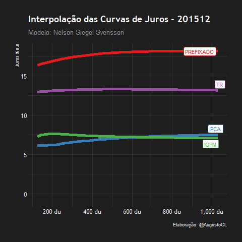
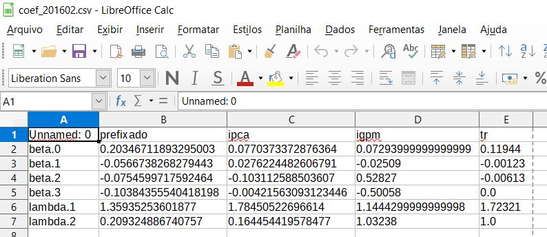
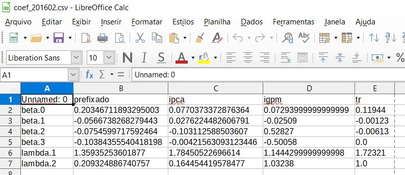

Webscraping e visualização animada da ETTJ [Python] e [R]
Esse projeto utiliza o modelo de curvas de juros NelsonSiegelSvensson, que é utilizado pela SUSEP, ANBIMA e diversos Bancos Centrais pelo mundo, para a gerar: - O histórico das curvas de juros futuras pré, ipca, igpm e tr extraídas diretamente do site da SUSEP via Webscraping. - Uma visualização animada (gif) do comportamento histórico de cada uma das curvas.

 Códigos disponíveis do projeto
Códigos disponíveis do projeto
Ferramentas utilizadas
- [Python] para o webscraping que automatiza a coleta dos dados e aplica o modelo da curva de juros.
- [R] que efetua a limpeza, tratamento e a criação do gif final.
Breve Descrição dos Códigos
O script .py extrai todos os parâmetros mensais disponibilizados no site da SUSEP, efetua o tratamento dos dados para a saída de uma tabela estruturada, e utiliza os parâmetros para a geração de todas as curvas futuras, gerando o output final em .xlsx
O script .R trata os dados em .xlsx e gera a animação .gif com o histórico das 4 curvas na mesma visualização.
 
